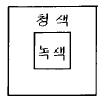
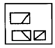
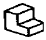
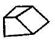
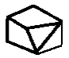

시각디자인산업기사 (2002-09-08 기출문제)
1과목: 색채학
1. 파장과 색명의 관계에서 '청색 기미의 자색'의 파장 범위는?
- 380 ~ 430nm
- 483 ~ 488nm
- 530 ~ 558nm
- 640 ~ 780nm
(정답률: 알수없음)

2. 광(光)파장의 차이에 따라 변하는 색채의 위치를 나타내는 것은?
- 색상
- 명도스케일
- 등채도
- 순도
(정답률: 알수없음)
3. 유채색의 범위에 관한 설명 중 가장 적절한 것은?
- 프리즘을 통과해 나타난 일곱가지의 색
- 무채색을 제외한 모든 색
- 중간색을 제외한 모든 순색
- 정상시각을 지닌 사람이 볼 수 있는 모든 색
(정답률: 알수없음)
4. 색상의 그라데이션(gradation)이란?
- 강조색이 없는 배색의 상태
- 한가지 색이 다른 색채로 옮겨갈 때 진행된 변화
- 여러 주조색으로 인해 통일된 상태
- 유사색상의 조화된 상태
(정답률: 알수없음)
5. 색의 대비효과와는 반대되는 현상이 특수한 배색의 경우 나타난다. 이와 같은 현상은?
- 색의 동시대비현상
- 색의 동화현상
- 중간혼합현상
- 푸르킨예현상
(정답률: 알수없음)
6. 그림과 같이 청색면으로 둘러싸인 녹색면은?

- 청색기미를 띠어 보인다.
- 황색기미를 띠어 보인다.
- 자주색 기미를 띠어 보인다.
- 적색기미를 띠어 보인다.
(정답률: 알수없음)
7. 색의 온도감에 대한 설명 중 가장 적합한 것은?
- 장파장의 색이 따뜻하고 단파장의 색이 차갑다.
- 명도가 낮은 검정계통은 차갑게 느껴진다.
- 같은 색이라도 광택이 있으면 더 따뜻하게 느껴진다.
- 저명도의 색은 한난의 감정이 없다.
(정답률: 알수없음)
8. 색채 조화의 원리는 자연이다. 저녁놀 가을의 붉은 단풍잎, 동물과 곤충 등의 색들이 우리에게 잘 알려진 배색으로서 조화한다는 원리는?
- 질서의 원리
- 친밀의 원리
- 유사의 원리
- 비모호성의 원리
(정답률: 알수없음)
9. 다음 중 문· 스펜서의 색채조화론에 대한 특징은?
- 질서, 동류성, 친근성, 명료성의 원리
- 색채 조화에 관한 4가지 원리
- 과학적이고 정량적인 색채조화론
- 애매하지않도록 선택된 배색에 의한 조화론
(정답률: 알수없음)
10. 다음 중 병실의 천정색으로 가장 적합한 것은?
- 명도 8전후, 채도 2
- 명도 5전후, 채도 4
- 명도 4전후, 채도 3
- 명도 2전후, 채도 4
(정답률: 알수없음)
11. 보색의 설명 중 맞는 것은?
- 혼합하면 무채색이 된다.
- 보라와 자주는 서로 보색관계를 이룬다.
- 색상환에서 거리가 가까운 색을 말한다.
- 보색끼리 배색하였을 때 단계적으로 명도차가 난다.
(정답률: 알수없음)
12. 다음 색채조절에 관한 설명 중 적절하지 못한 것은?
- 장시간 보여지는 대상물에 대해서는 고명도 고채도는 피한다.
- 색채조절을 하기 위해서는 다양한 칼라를 사용해야만 한다.
- 실내에 있어서 조명의 특성을 이용하여 조명 효율을 높인다.
- 색채에 의한 심리적 효과를 이용하여 그 방의 이용가치를 높인다.
(정답률: 알수없음)
13. 색채관리에 대한 설명 중 가장 올바른 것은?
- 색채의 통합적인 활용 방법이다.
- 색채를 계열별로 관리하는 방법이다.
- 제품색의 기호도를 조사하는 방법이다.
- 제품의 기능과 품질을 색채와 분리하는 방법이다.
(정답률: 알수없음)
14. 파랑색(Blue)의 상징성으로 가장 적합한 것은?
- 정의
- 침착
- 순결
- 사망
(정답률: 알수없음)
15. 먼셀의 색표시 기호 중 V(Value)가 나타내는 것은?
- 색상
- 명도
- 채도
- 휘도
(정답률: 알수없음)
16. 오스트발트(Ostwald)색상환은 무채색 축을 중심으로 몇 색상이 배열되어 있는가?
- 9
- 10
- 24
- 35
(정답률: 알수없음)
17. 다음 중 색의 온도감이 가장 낮은 것은?
- 황록
- 흰색
- 녹색
- 황색
(정답률: 알수없음)
18. 다음 중 대비효과가 가장 큰 배색 조화는?
- 녹색 - 남색
- 주황 - 연두
- 노랑 - 남색
- 빨강 - 보라
(정답률: 알수없음)
19. 파랑색과 검정색의 중간에 색을 넣어 분리, 격리되어 보이는 세퍼레이션(Separation)의 효과를 주고자한다. 가장 적합한 것은?
- 녹색
- 어두운 회색
- 노랑
- 빨강
(정답률: 알수없음)
20. 적(red), 녹(green), 청(blue) 삼원색을 혼합하여 백색광과 같게 하는 혼색 방법은?
- 중간혼색
- 감법혼색
- 가법혼색
- 단일혼색
(정답률: 알수없음)
2과목: 인쇄 및 사진기법
21. 화면의 중심부를 선예하게 해도 광축에서 떨어진 점에 대한 광원의 상은 한점이 되지 않는다. 이 수차는?
- 비점 수차
- 코마 수차
- 색 수차
- 구면 수차
(정답률: 알수없음)
22. 컬러 인화지(N - P용)의 맨 윗층의 발색은?
- 녹색(green)
- 마젠타색(magenta)
- 시안색(cyan)
- 황색(yellow)
(정답률: 알수없음)
23. 광화학적인 방법으로 제판하는 방식이 아닌 것은?
- 선화판
- 연판
- 망점판
- 콜로타이프
(정답률: 알수없음)
24. 일반적인 평판(오프셋) 잉크의 건조 형식은?
- 침투건조
- 증발건조
- 냉각건조
- 산화중합건조
(정답률: 알수없음)
25. 셔터가 열림과 동시에 전기가 통하도록 되어 있는 스트로보를 위한 카메라의 전기적 연결 장치는?
- X접점
- FP접점
- M접점
- F접점
(정답률: 알수없음)
26. 안개의 효과를 내기 위해 사용되는 필터는?
- Sky light filter
- Haze filter
- Netural Density filter
- Fog filter
(정답률: 알수없음)
27. 컬러 네거티브 필름 현상처리 순서가 바르게 된 것은?
- 현상 - 수세 - 건조 - 표백 - 건조
- 표백 - 현상 - 정착 - 수세 - 건조
- 현상 - 표백 - 정착 - 수세 - 건조
- 현상 - 정착 - 수세 - 표백 - 건조
(정답률: 알수없음)
28. 판의 깊이에 따라 계조를 나타내기 때문에 농담이 풍부하고 강한 느낌을 줌으로써 각종 유가증권, 지폐, 미술 인쇄물, 우표 인쇄와 포장 인쇄, 건축재료 인쇄에 사용되는 방식은?
- 볼록판 인쇄
- 평판 인쇄
- 스크린 인쇄
- 그라비어 인쇄
(정답률: 알수없음)
29. 일반 상업인쇄나 고급인쇄물 또는 카다록에 주로 사용되는 용지의 종류는?
- 갱지
- 중질지
- 크라프트지
- 아트지
(정답률: 알수없음)
30. 사진을 인화한 후에 불필요한 부분을 잘라내는 것을 무엇이라 하는가?
- 콜라주
- 크로핑
- 스포팅
- 프레이밍
(정답률: 알수없음)
31. 밀착용으로 사용하는 명실용 필름의 최대 감광피크치의 파장영역(nm)은?
- 320 ∼ 350
- 420 ∼ 450
- 520 ∼ 550
- 620 ∼ 650
(정답률: 알수없음)
32. 컬러사진에서 감광재료에 사용되는 색소를 형성할 수 있는 물질은?
- 할로겐화은(AgX)
- 젤라틴(gelatin)
- 커플러(coupler)
- 현상제(developer)
(정답률: 알수없음)
33. 제판법의 종류 중 인쇄판의 사용 목적에 따른 기본 4판식이 아닌 것은?
- 볼록판
- 평판
- 공판
- 잉크젯트판
(정답률: 알수없음)
34. 접사기구와 가장 거리가 먼 것은?
- 컨버터
- 중간링
- 벨로즈
- 클로즈업 렌즈
(정답률: 알수없음)
35. 일반적으로 PS판을 사용하여 인쇄 하였다면 무슨 인쇄방식에 속하는가?
- 볼록판
- 오목판
- 공판
- 평판
(정답률: 알수없음)
36. 사진을 인화한 후에 작은 흠이나 먼지를 지우는 작업을 무엇이라 하는가?
- 트리밍
- 크로핑
- 스포팅
- 프레이밍
(정답률: 알수없음)
37. 속장과 등 사이에 공간이 있는 형태로서 표지의 크기가 속장보다 큰 제책 방식은?
- 양장제책
- 반양장제책
- 호부장제책
- 무선철제책
(정답률: 알수없음)
38. 최근에는 레이져광을 이용한 사진제판기구가 증가하고 있다. 제판용 드럼 스캐너에 사용하는 Ar 레이져의 파장(Blue 및 Green빛)피크치(nm)는?
- 388, 414
- 488, 514
- 588, 614
- 688, 714
(정답률: 알수없음)
39. 일반적인 적외선 잉크의 특성으로 올바른 것은?
- 잉크의 건조 시간이 느리다.
- 적외선 건조 장치에서만 경화, 건조가 된다.
- 잉크의 보관이 까다로워서 사용하기 불편하다.
- 광택이 좋고 내마찰성이 강한 인쇄물을 제작할 수 있다.
(정답률: 알수없음)
40. 피사체의 앞쪽 45° 로 부터의 조명으로 적당한 입체감과 깊이가 표현되며 모든 조명의 기본적인 조명이라고 하는 것은?
- 정면광
- 측광
- 사광
- 역광
(정답률: 알수없음)
3과목: 시각디자인론
41. 다음 정투상도는 제 3각법으로 그린 그림이다. 어느 입체도를 보고 그린 것인가?




(정답률: 알수없음)
42. 1920년대 미국의 대공황이 디자인 발전에 영향을 준 가장 큰 이유는?
- 빈부의 차이가 사치스러운 디자인을 촉발했다.
- 제품 생산의 축소로 디자인에 대한 인력의 여유가 생겼다.
- 소비의 급격한 하락으로 판매의 수단이 되는 디자인을 필요로 하게 되었다.
- 미국의 대공황으로 상대적 부유층이 디자인을 요구하였다.
(정답률: 알수없음)
43. 다음 비주얼 커뮤니케이션 디자인의 영역 중 3D 디자인 분야에 포함되는 것은?
- 포스터
- 패키지
- 신문광고
- 판촉물
(정답률: 알수없음)
44. 도면에 사용하는 길이 치수의 단위는?
- mm
- ㎝
- m
- inch
(정답률: 알수없음)
45. 다음 중 지시적 기능보다 상징적 기능을 가진 것은?
- 마크, 일러스트레이션
- 도표, 지도
- 부호, 기호
- 교통신호, 화살표
(정답률: 알수없음)
46. 산업혁명에 대한 내용 중 가장 거리가 먼 것은?
- 18세기 후반 영국에서부터 시작되었다.
- 수공업, 가내공업은 기계공업, 대량생산으로 유도되었다.
- 기계에 의해 조잡한 제품의 범람으로 미적수준의 저하를 가져왔다.
- 과거의 역사적 미를 바탕으로 새로운 미를 창출했다.
(정답률: 알수없음)
47. 다음 선에 대한 설명 중 틀린 것은?
- 사선은 속도감이 있다.
- 선은 면이 이동한 흔적에서 생긴다.
- 선에는 굵은 선과 가는 선이 있다.
- 수직선은 평온과 안정감이 있다.
(정답률: 알수없음)
48. Arts and crafts 운동과 관련된 인물로 짝지워진 것은?
- 존 러스킨 - 윌리엄 모리스
- 헤르만 무테지우스 - 테오도르 피셔
- 월터 그로피우스 - 모홀리 나기
- 헨리 반 데 벨데 - 몬드리안
(정답률: 알수없음)
49. 제품에대한 소비자의 여론조사 과정에서 고려해야 할 사항이 아닌 것은?
- 구매동기
- 디자인에 대한 문제점
- 경쟁상품의 품질 및 비교
- 기업의제품 생산정책
(정답률: 알수없음)
50. 디자인 관리의 의의와 관계없는 것은?
- 계획
- 조직
- 조정 및 통제
- 세무 및 감사
(정답률: 알수없음)
51. 바우하우스를 낳게 한 즉물적(卽物的) 조형 운동은?
- 미술 공예운동
- 스타일 리버티
- 독일공작 연맹
- 세세션운동
(정답률: 알수없음)
52. 다음 디자인의 영역에 대한 설명 중 적합한 것은?
- 시각디자인은 사용가치를 갖는 도구를 직접 만들어 내는 분야이다.
- 환경디자인은 인간환경을 바람직하게 구축하는 생활터전에 관한 분야이다.
- 제품디자인은 정보 전달을 목적으로 시각적인 실체를 창조하는 분야이다.
- 운송기구, 건축 등은 제품디자인의 한 분야이다.
(정답률: 알수없음)
53. 인간의 감각 중 가장 많은 정보를 받아들이는 것은?
- 후각
- 시각
- 청각
- 미각
(정답률: 알수없음)
54. 다음 중 투시도법의 기본 요소가 아닌 것은?
- 눈의 위치
- 대상물
- 색채
- 거리
(정답률: 알수없음)
55. 수출산업 육성정책의 영향으로 산업디자인의 인식이 높아지고, 제1회 상공미전이 개최되는 등 한국 디자인 발전의 기초가 마련된 시기는?
- 1950년대
- 1960년대
- 1970년대
- 1980년대
(정답률: 알수없음)
56. 일정한 질서를 가지고 배열되는 단계적 변화는?
- 그라데이션(Gradation)
- 하모니(Harmony)
- 균형(Balance)
- 왜곡(Distortion)
(정답률: 알수없음)
57. 율동(리듬)의 원리에 속하는 것으로만 연결된 것은?
- 조화-흥미-통일
- 반복-방사-점이
- 균형-대칭-비례
- 대조-대비-변화
(정답률: 알수없음)
58. 제품수명주기에서 지속적으로 이익이 향상되는 시기는?
- 도입기
- 성장기
- 성숙기
- 쇠퇴기 직전
(정답률: 알수없음)
59. 아루누보(Art Nouveau)의 의미로 가장 적합한 것은?
- 현대적 장식미술
- 신예술
- 복고풍 미술양식
- 고전 장식미술
(정답률: 알수없음)
60. 1점 투시에 대한 설명 중 적합하지 않은 것은?
- 인테리어 공간이나 건축설계에서 보편적으로 쓰인다.
- 물체에서 나오는 모든 선들이 하나의 소점으로 모인다.
- 한 쌍의 평행면들은 화면과 평행인 상태로 남아있고, 다른 한 쌍의 평행면들은 소점을 향하여 좁아지며 나타난다.
- 바닥면보다는 천장면을 상세하게 표현하는 데 효과적이다.
(정답률: 알수없음)
4과목: 시각디자인실무 이론
61. 기업의 제품과 마케팅믹스를 소비자의 마음속에 자리잡게 기획하는 광고 용어는?
- 타겟설정
- 포지셔닝 전략
- 디자인 모티브 설정
- 매체 전략
(정답률: 알수없음)
62. 신세대의 의식과 가치관을 가장 알맞게 나열한 것은?
- 단순성, 개성중시, 자율성, 외국문화모방
- 감성적, 독립적, 성실성, 조직중심
- 논리적, 잔업수용, 충성심, 외국문화 모방
- 문제의식, 팀 중심, 집단이기주의, 과시적
(정답률: 알수없음)
63. 일러스트레이션 분야에 대한 설명 중 잘못된 것은?
- 만화적 그림에 유머나 아이디어를 넣어 완성한 그림
- 신문 등 시사적인 내용을 다루는 매체에 많이 활용
- 어원은 "과장하다"라는 이태리어에서 유래
- 원래는 그림을 그리기 위해 스케치한 한 것을 의미
(정답률: 알수없음)
64. 캘린더가 걸리거나 놓이는 장소와 조화롭게 하는 면을 고려한 캘린더의 기능은?
- 정보 전달 기능
- 본원적 기능
- 홍보기능
- 장식적 기능
(정답률: 알수없음)
65. POP광고에 대한 설명 중 거리가 먼 것은?
- 구매 시점 광고
- 판매장소의 광고
- 설득적, 충동적 광고
- 연상적, 이미지 광고
(정답률: 알수없음)
66. 아이디어탐구법인 브레인스토밍(brainstorming)의 설명 중 잘못된 것은?
- 발상의 연쇄적 효과를 노리는 것이다.
- 이성적 비판력을 기본으로 한다.
- 질(質)보다 양(量)이 중요하다.
- 다른 사람의 아이디어를 활용한다.
(정답률: 알수없음)
67. 패키지(포장)의 기능이 아닌 것은?
- 보호와 보존성
- 편리성
- 상품성
- 지역성
(정답률: 알수없음)
68. 보는 사람의 입장에서 표시물에는 전달의 목적을 효율적으로 달성하기 위한 필수 조건이 따른다. 이와 관계가 먼 것은?
- 가시성
- 기억성
- 주시성
- 통일성
(정답률: 알수없음)
69. 다음 설명 중 틀린 것은?
- 아리스토텔레스는 설득의 구성요소로 에토스, 로고스, 파토스가 있다고 말했다.
- 에토스는 정보의 신뢰도를 말한다.
- 로고스는 설득을 위한 논리적 주장을 말한다.
- 파토스는 설득에 사용되는 행위를 말한다.
(정답률: 알수없음)
70. 마이클 포터(Michael E. Pouter)의 경쟁전략 3기본형이 아닌 것은?
- 차별화 전략
- 저원가 전략
- 집중화 전략
- 세분화 전략
(정답률: 알수없음)
71. 한가지 성격의 글자체가 굵기의 변화와 함께 넓힘체, 좁힘체, 빗김체로 비례의 변화를 갖는 유형을 갖추었을 때 이들 전부를 지칭하는 것은?
- Series
- Family
- Font
- Figure
(정답률: 알수없음)
72. 아트디렉터나 디자이너와 협력하여 광고를 만드는 문장 담당의 전문가는?
- 일러스트레이터
- PD
- AE
- 카피라이터
(정답률: 알수없음)
73. 다음 중 B.I.(Brand Identity)의 필요성 대두에 대해 가장 잘 설명된 내용은?
- 시장규모가 커지고 소비자의 소득이 증가되었기 때문이다.
- 과거보다 기업으로부터 생산된 제품의 절대수가 증가하였기 때문이다.
- 소비자의 기호가 세분화 되고 다양화 되었기 때문이다.
- 기업 이미지 통합 디자인의 도입으로 불가피하게 되었기 때문이다.
(정답률: 알수없음)
74. 소비자 생활유형(Life Style)연구에 관한 다음 내용 중 맞는 것은?
- 깊이있는 분석이 어렵다
- 발상법과는 연관이 없다
- 마케팅 전략에 연결시키기 쉽다
- 설득력이 없다.
(정답률: 알수없음)
75. Mass Communication에 대한 설명 중 틀린 것은?
- 하나의 메시지가 복제되어 전달되는 간접적 커뮤니케이션이다.
- 쌍방향 및 인적 커뮤니케이션의 성격이다.
- 송신자, 메시지, 미디어, 수신자가 기본적 요소이다.
- 불특정 다수의 수신자에게 동시에 전달한다.
(정답률: 알수없음)
76. 다음 광고 매체 중 소구 대상이 가장 명확한 것은?
- TV
- 신문
- DM
- 잡지
(정답률: 알수없음)
77. 옥외광고물이 아닌 것은?
- 간판(sign-board)
- 포스터(poster)
- 스카이 라이팅(sky writing)
- 부착 광고(tip-on ad.)
(정답률: 알수없음)
78. 추상적 일러스트레이션의 표현양식에 따른 분류가 아닌 것은?
- 구상적 일러스트레이션
- 기하학적 일러스트레이션
- 유기적 일러스트레이션
- 앙포르멜적 일러스트레이션
(정답률: 알수없음)
79. 신문광고의 헤드라인에 관한 설명 중 잘못된 것은?
- 광고 컨셉이 극적이고 긴장감 있게 표현되어야 한다.
- 독자의 주목을 바디카피로 연결할 수 있어야 한다.
- 사진이나 일러스트레이션과 유기적 연관성을 가져야 한다.
- 내용을 자세하고 구체적으로 전달해야 한다.
(정답률: 알수없음)
80. 마아케팅 믹스(marketing mix)의 구성 요소로서 4p가 있는데 이에 해당되지 않는 것은?
- Product
- Price
- Promotion
- Problem
(정답률: 알수없음)